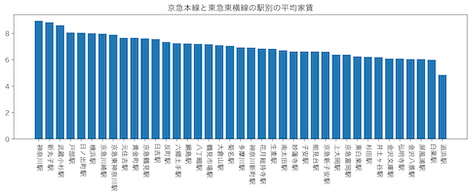
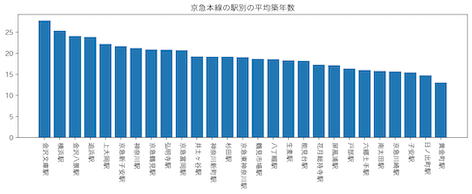

第6回
一人暮らしおすすめ物件
オススメするターゲット
- 新大学１年生
- 女性
条件
- 家賃６−７万
- 治安がいい
- 落ち着いた雰囲気の場所
- 駅まで歩ける（５−20分）
調査する路線：東急東横線
理由：登校時間短縮と乗り換えの手間を省くため、みなとみらい線が直通する東急東横線に絞った。
駅数の多い京急本線と東急東横線に絞って調査したところ、武蔵小杉駅、新丸子駅、神奈川駅以外の駅の平均家賃はほとんど変わらず、どこも８万円程度であった。

東急東横線は、車両数が少なく、朝の通勤ラッシュ時に混雑することが多いので、京急本線に絞って、物件を探してみることにした。

黄金町、日ノ出町が築年数的には浅いが、この周辺は、飲屋街が広がっていて、夜道が危険。
また、横浜駅までの乗車時間が１０−１５分であるところで、できるだけ築浅なところということで、今回は、南太田駅を紹介しようと思う。